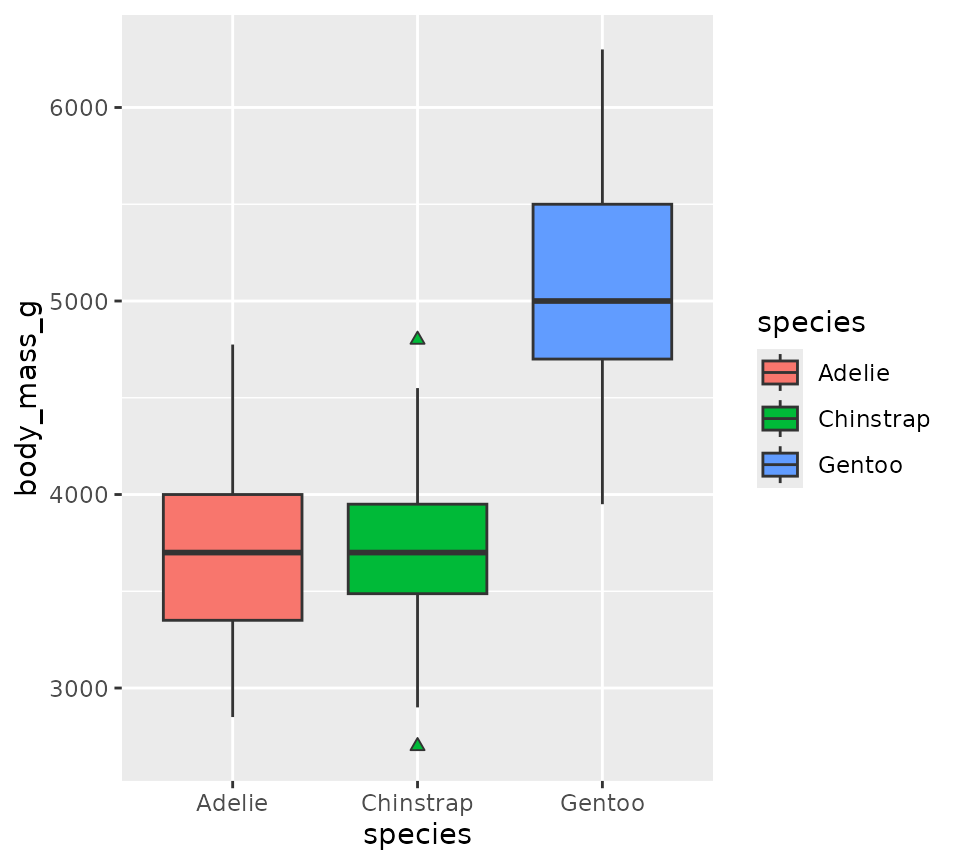
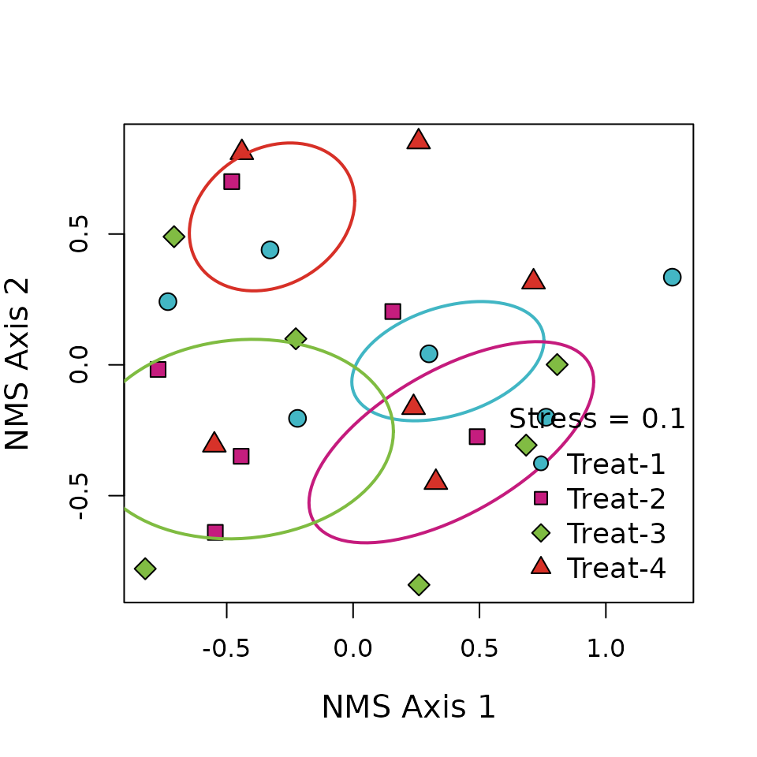

Overview
The supportR package is an amalgam of distinct functions
I’ve written to accomplish small data wrangling, quality control, or
visualization tasks. These functions tend to be short and
narrowly-defined. An additional consequence of the motivation for
creating them is that they tend to not be inter-related or united by a
common theme. If this vignette feels somewhat scattered because of that,
I hope it doesn’t negatively affect how informative it is or your
willingness to adopt supportR into your scripts!
This vignette describes the main functions of supportR
using the examples included in each function.
Example Data
In order to demonstrate some of the data visualization functions of
supportR, we’ll use some some example data from Dr. Allison Horst’s palmerpenguins
R package.
# Check the structure of the penguins dataset
str(penguins)
#> 'data.frame': 344 obs. of 8 variables:
#> $ species : Factor w/ 3 levels "Adelie","Chinstrap",..: 1 1 1 1 1 1 1 1 1 1 ...
#> $ island : Factor w/ 3 levels "Biscoe","Dream",..: 3 3 3 3 3 3 3 3 3 3 ...
#> $ bill_length_mm : num 39.1 39.5 40.3 NA 36.7 39.3 38.9 39.2 34.1 42 ...
#> $ bill_depth_mm : num 18.7 17.4 18 NA 19.3 20.6 17.8 19.6 18.1 20.2 ...
#> $ flipper_length_mm: int 181 186 195 NA 193 190 181 195 193 190 ...
#> $ body_mass_g : int 3750 3800 3250 NA 3450 3650 3625 4675 3475 4250 ...
#> $ sex : Factor w/ 2 levels "female","male": 2 1 1 NA 1 2 1 2 NA NA ...
#> $ year : int 2007 2007 2007 2007 2007 2007 2007 2007 2007 2007 ...Custom ggplot2 Theme
I’ve created a set of custom ggplot2 theme
elements to guarantee that all of my figures share similar aesthetics.
Feel free to use theme_lyon if you have similar
preferences!
theme_lyon does the following changes to a
ggplot2 plot:
- Removes legend title and background
- Removes gray box behind colors in legend elements
- Removes major/minor gridlines
- Makes axes’ lines black
- Increases the font size of the axes titles and tick labels
# Load ggplot2
library(ggplot2)
# Create a plot and allow default ggplot themeing to be added
ggplot(penguins, aes(x = species, y = body_mass_g, fill = species)) +
geom_boxplot(outlier.shape = 24)
# Compare with the same plot with my theme
ggplot(penguins, aes(x = species, y = body_mass_g, fill = species)) +
geom_boxplot(outlier.shape = 24) +
supportR::theme_lyon()
Metric & Non-Metric Multidimensional Ordinations
I’ve also created ordination for Nonmetric
Multidimensional Scaling (NMS) or Principal Coordinates Analysis (PCoA)
ordinations. Note that this function requires your multidimensional
scaling object be created by either ape::pcoa or
vegan::metaMDS.
# Load data from the `vegan` package
utils::data("varespec", package = "vegan")
# Make a columns to split the data into 4 groups
treatment <- c(rep.int("Trt_1", (nrow(varespec)/4)),
rep.int("Trt_2", (nrow(varespec)/4)),
rep.int("Trt_3", (nrow(varespec)/4)),
rep.int("Trt_4", (nrow(varespec)/4)))
# And combine them into a single data object
data <- cbind(treatment, varespec)
# Actually perform multidimensional scaling
mds <- vegan::metaMDS(data[-1], autotransform = FALSE,
expand = FALSE, k = 2, try = 10)
# With the scaled object and original dataframe we can use this function
supportR::ordination(mod = mds, grps = data$treatment, x = "bottomright",
legend = paste0("Treat-", 1:4))